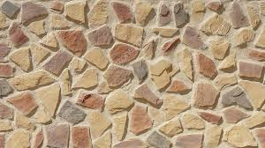

article : İçeriği , içindeki etiketleri işleyerek olduğu gibi gösterir.
aside : İçeriği , içindeki etiketleri işleyerek olduğu gibi gösterir.
Makale
Makale İçeriği ...
details : summary:
Copyright
Bu sayfadaki içerikler telif hakkı ile korunmaktadır.
figure : içinde resim gösterilir.
figcaption : resim için bir başlık eklenir.
Duvar

Sayfanın en altında gösterilmesi gereken içeriktir.
header : başlıklar içinde yazılır.
başlık
hgroup : header ile aynı mantık ..
nav : menüleri , butonları ve bağlantıları içeren etiket grubudur.
section : bölüm kesti anlamındadır.bir yazının bir parçasını göstermek için kullanılabilir.